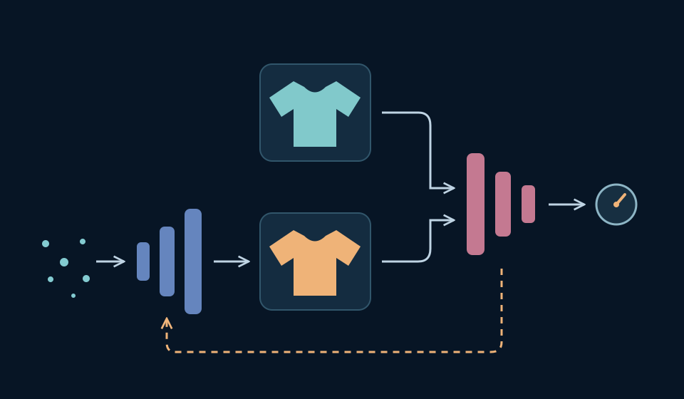
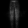
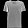
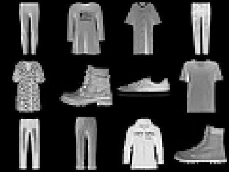
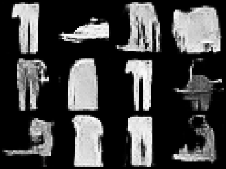
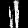
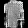
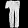
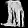
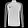

Generative Adversarial Networks
Learning to generate through a learned judge
Generative Adversarial Networks
Learning to generate through a learned judge
What if another network supplied the feedback for making an image?
Dr. A. Belcaid

A first-level map of the lecture
01
From generating images to learning a judge
02
Two networks, two different jobs
03
Turning competition into learning objectives
04
Training one network at a time
05
Building an image GAN with convolutions
06
Judging samples, diversity, and failure
01 · From generating images to learning a judge
Which images came from the dataset?
For each letter, predict the source and name one visual clue.


Dataset: A, D, F. VAE outputs: B, C, E.
Blur or texture may be clues here; the labels come from how the images were produced.
Actual Fashion-MNIST images and frozen course VAE outputs · first three held-out examples per source, interleaved · illustrative gallery, not a quality benchmark.
Which real image should this draw match?
Keep the generated image fixed. Change only the proposed target.

A fixed prior draw
No pairing was supplied by the data.The dataset gives us examples—not a target image for each random code.
Course experiment · actual frozen VAE output and unrelated Fashion-MNIST validation images · pixel errors computed from the original floating-point tensors.
Can a network learn the distinction?
Same six images. Same frozen VAE. Only the classifier learns.
Score for “dataset source”: 0 = generated · 1 = dataset
1,000 dataset images + 1,000 VAE outputs
Threshold 0.5 · balanced set · 50% chance baseline
A learned distinction can supply feedback. Its score is not a universal realism rating.
Measured course experiment · 784–128–64–1 classifier · 6,000 training examples per source · fixed generator, held-out images and latent draws · protocol and measurements.
Could the judge teach the image maker?
We have learned to distinguish sources. Now give the image maker a reason to change.
The discriminator learns to separate. The generator learns to challenge it.
Schematic GAN training idea, not a measured adversarial run · image tiles reuse the earlier experiment · course diagram based on Goodfellow et al., 2014.
Two networks, two different jobs
Keep the sampler. Change the training system.
An unconditional GAN needs no encoder: random code → image → learned judge.
Course-made structural comparison · schematic paths, not trained GAN results · Kingma & Welling, 2013; Goodfellow et al., 2014.
Trace one batch through the two networks
Given: 4 codes of length 16; grayscale images are 28 × 28.
Find both output shapes. Which modules are needed only to generate?
G: 4 × 1 × 28 × 28 pixels. D: 4 × 1 logits. Generation uses G alone.
Trace a path: the same D accepts either image source.
Batch-first PyTorch shapes · one source logit per image, not ten garment-class scores · executable module checks.
G turns a code into an image tensor
import torch
from torch import nn
latent_dim = 16
G = nn.Sequential(
nn.Linear(latent_dim, 128), nn.ReLU(),
nn.Linear(128, 256), nn.ReLU(),
nn.Linear(256, 784), nn.Sigmoid(),
nn.Unflatten(1, (1, 28, 28)),
)
z = torch.randn(4, latent_dim)
fake = G(z)
print(fake.shape)
# torch.Size([4, 1, 28, 28])784 outputs become 1 × 28 × 28 pixels. Sigmoid matches real images scaled to [0, 1].
Actual first output of this randomly initialized G · no training · runnable source and measured checks · real data: Fashion-MNIST.
D returns one logit for each image
D = nn.Sequential(
nn.Flatten(),
nn.Linear(784, 256), nn.LeakyReLU(0.2),
nn.Linear(256, 128), nn.LeakyReLU(0.2),
nn.Linear(128, 1),
)
real_logits = D(real)
fake_logits = D(fake)
print(fake_logits.shape)
display_scores = fake_logits.sigmoid()
# torch.Size([4, 1])One D, two image sources. Its raw output is a logit; sigmoid converts it to a score.
Actual real image and untrained G output · independently initialized G and D · executable source · logits follow the PyTorch binary-loss contract.
Turning competition into learning objectives
What should a correct judge be rewarded for?
Two illustrative predictions. Which source target belongs to each image?
For this pair: LD = 0.223 + 0.223 = 0.446. Minimize it by raising real scores and lowering fake scores.
p(u) = sigmoid(D(u)); D returns logits in our code · natural logarithms · sum of two source means, without a ½ factor · course example based on Goodfellow et al., 2014, §3.
One generated image. Opposite desired scores.
Hold the image source fixed: generated. Move its hypothetical judge score.
D’s objective on this image
Target 0 · push p down ←
G’s objective on this image
Target 1 · push p up →
Target 1 expresses what G wants D to predict. The image is still generated.
Exact loss arithmetic for a hypothetical score; the slider does not train or alter an image · both loss bars use a common 0–4.61 scale · Goodfellow et al., 2014, §3.
Rejected samples still need a useful gradient
Original minimax
ℓ = ln(1 − p)
∂ℓ/∂a = −p
Non-saturating
ℓ = −ln p
∂ℓ/∂a = p − 1
a = D(G(z)); p = sigmoid(a)
At p = 0.01, non-saturating gives 99× the gradient magnitude at the logit. Both losses push it upward.
Analytic curves; selected points verified with PyTorch autograd · logit gradients, not full parameter-gradient norms · course figure based on Goodfellow et al., 2014, §3.
Three targets. Which ones belong in the code?
Given: real_logits and fake_logits both have shape (4, 1).
Fill each “?” with a tensor of zeros or ones. Use the non-saturating G loss.
Real → D
Identify the dataset source.
Generated → D
Identify the generated source.
Generated → G objective
Make D favor the dataset source.
bce = nn.BCEWithLogitsLoss()
loss_D = (
bce(real_logits, ?torch.ones_like(real_logits))
+ bce(fake_logits, ?torch.zeros_like(fake_logits))
)
loss_G = bce(fake_logits, ?torch.ones_like(fake_logits))On section 2’s recorded logits: LD = 1.4044; LG = 0.7014.
Loss arithmetic only; separate forward passes and optimizer updates follow in section 4 · measured on untrained section 2 outputs · executable checks · PyTorch BCEWithLogitsLoss.
Training one network at a time
Same networks. Different update paths.
D’s turn: classify both sources. Stop the generated-image path before G.
A fixed network can still transmit gradients to its input.
Schematic forward and backward paths; red arrows represent derivatives, not image flow · one D step then one G step in our example · Goodfellow et al., 2014, Algorithm 1.
D’s turn: treat generated images as fixed inputs
D.requires_grad_(True)
opt_D.zero_grad(set_to_none=True)
fake = G(z)
real_logits = D(real)
fake_logits = D(fake.detach())
loss_D = (
bce(real_logits, torch.ones_like(real_logits))
+ bce(fake_logits, torch.zeros_like(fake_logits))
)
loss_D.backward()
opt_D.step().detach() cuts this route into G. opt_D.step() updates only D’s parameters.
Executed on four Fashion-MNIST training examples and four generated outputs · Adam, lr = 0.001 · runnable update audit · recorded parameter checks.
G’s turn: pass through D without updating D
D.requires_grad_(False)
opt_G.zero_grad(set_to_none=True)
fake = G(z)
fake_logits = D(fake)
loss_G = bce(
fake_logits, torch.ones_like(fake_logits)
)
loss_G.backward()
opt_G.step()
D.requires_grad_(True)Freeze D’s parameters, keep its input derivative, and step G’s optimizer.
Same audited iteration, after the D step · fresh forward computation through the updated D · G: 6/6 tensors changed; D: 0/6 · PyTorch autograd mechanics.
“Freeze D” — did we cut too much?
Given: it is G’s turn; G is trainable and its old gradients are cleared.
Predict what happens at backward. Repair the highlighted block.
fake = G(z)
with torch.no_grad():
fake_logits = D(fake)
loss_G = bce(fake_logits, torch.ones_like(fake_logits))
loss_G.backward()loss_G.requires_grad is False. backward raises an error; G receives no gradients.
D.requires_grad_(False)
fake_logits = D(fake) # ordinary grad mode
After G’s step, restore D.requires_grad_(True).
Actual failing execution captured in the update audit · original course debugging example · PyTorch: locally disabling gradient computation.
Building an image GAN with convolutions
Give the generator a spatial structure
G grows feature maps into pixels; D compresses pixels into one logit. The two losses and alternating updates stay the same.
Course-made architecture comparison · shapes omit the batch axis · ConvT = transposed convolution · small 28×28 adaptation inspired by Radford, Metz & Chintala, 2015.
G builds an image. D reduces it to a logit.
Dimensions: channels × height × width · ConvT = transposed convolution · depth suggests channels.
Original course schematic of the exact section 5 models; block sizes are illustrative, not to scale · image: actual epoch-60 output, draw 1 · G and D have independent weights · DCGAN architecture context: Radford et al., 2015.
Enlarge by placing and adding learned patterns
One channel in 1D: input [1, 2], kernel [1, 2, 1], stride 2, no padding.
The second input places its weighted kernel two positions to the right.
For our 2D layer: (7 − 1) × 2 − 2 × 1 + 4 = 14, along both height and width.
Exact toy computation verified with PyTorch · dilation 1, output_padding 0, no bias in the toy · transposed convolution applies a learned linear map, not an inverse convolution · official API and output-size rule.
Trace each spatial stage into its layer
G = nn.Sequential(
nn.ConvTranspose2d(16, 64, 7, 1, 0, bias=False),
nn.BatchNorm2d(64), nn.ReLU(),
nn.ConvTranspose2d(64, 32, 4, 2, 1, bias=False),
nn.BatchNorm2d(32), nn.ReLU(),
nn.ConvTranspose2d(32, 1, 4, 2, 1), nn.Tanh(),
)
z = torch.randn(4, 16, 1, 1)
fake = G(z) # (4, 1, 28, 28)D = nn.Sequential(
nn.Conv2d(1, 32, 4, 2, 1), nn.LeakyReLU(0.2),
nn.Conv2d(32, 64, 4, 2, 1), nn.LeakyReLU(0.2),
nn.Conv2d(64, 1, 7, 1, 0),
nn.Flatten(1),
)
logits = D(fake) # (4, 1)
# raw logits for BCEWithLogitsLossTanh outputs [−1, 1]: scale real pixels to the same range. D still returns raw logits.
Exact modules used in the recorded run · runnable source · G BatchNorm: train mode on G turns, eval mode on D turns and snapshots; D has no BatchNorm · DCGAN-inspired adaptation.
Hold the codes fixed. Watch the images change.
Six fixed latent draws. One convolutional GAN. Only the learned model state changes.
Epoch 0 · untrained initialization · fixed draws 1–6
Structure emerges in this run. Six images cannot establish quality or diversity across the generated distribution.
Actual locally recorded outputs, not browser inference · first six fixed draws, no ranking or removal · 12,000 Fashion-MNIST training images; 60 epochs; seed 1205; Adam 0.0002, β=(0.5,0.999) · full protocol · dataset source.
Judging samples, diversity, and failure
A plausible image is only one part of the job


Recorded outputs · batch 1 of 3 · no selection by quality
Inspect both fidelity and variety. Mode collapse maps many latent codes to a narrow set of outputs.
36 actual fresh outputs, seed 1208; three consecutive batches · held-out images were unseen during G/D training · repetition control deliberately duplicates one output; it is not observed collapse in this run · protocol · evaluation context: Theis et al., 2016.
Training losses are diagnostics, not a quality score


Loading recorded loss values…Both networks keep changing. Read the curves alongside fixed-code samples and fresh batches.
Actual section 5 training record, all 60 epochs · losses measured on each network’s own turn and averaged over minibatches · same shared vertical axis · recorded values · moving objectives: Goodfellow et al., 2014.
Does “looks familiar” mean it was copied?
Three consecutive fresh outputs. Reveal each nearest image among 12,000 training examples.



MSE = 0.0746Nearest neighbors are a useful sanity check. Pixel distance alone cannot establish whether a model memorized.
Actual outputs and exhaustive nearest-neighbor search · mean squared pixel error in [0,1], using original floating-point outputs · no query selection · indices and distances · training data: Fashion-MNIST.
Assemble the system—and the evidence to judge it
Task: generate varied 28 × 28 grayscale garments from random codes.
You have unlabeled images and a held-out split. Specify the five parts below.
range + split?Hypothesis
G and D?Loss
targets?Optimization
which weights?Evaluation
what evidence?
| Data | Scale real images to [−1, 1]; keep a held-out reference. |
|---|---|
| Hypothesis | z → convolutional G → image → convolutional D → logit. |
| Loss | D targets: real 1, fake 0. G target: 1 through D. |
| Optimization | D turn: detach G output. G turn: keep the path through fixed D. |
| Evaluation | Fresh batches + fixed-code history + nearest training images. |
Sampling: draw z → G in eval mode → image. D is a training partner.
Lecture synthesis · the objective, gradient paths, model shapes, and evidence checks have all been demonstrated · runnable reference: convolutional GAN and evaluation builder.
Deep Learning · Chapter 12